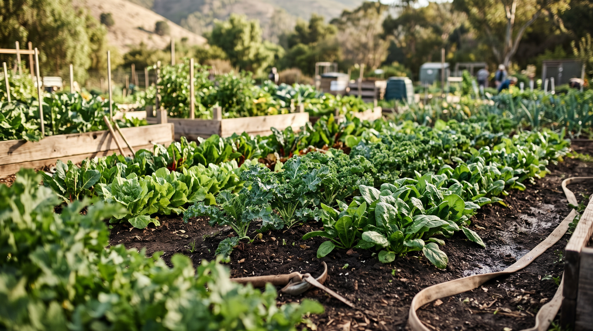
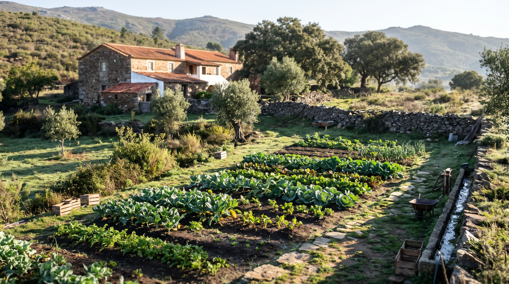
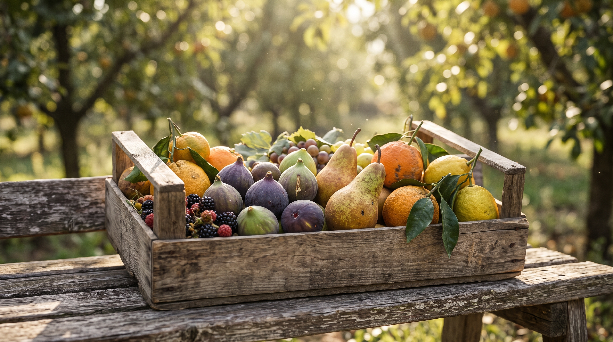
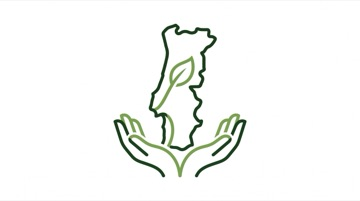

Produtores Locais
Da nossa terra para a sua mesa: conheça as quintas e as pessoas que cultivam os seus alimentos.
Os Nossos Parceiros de Confiança
Trabalhamos exclusivamente com agricultores certificados em produção biológica que partilham o respeito pelo solo, pela água e pelo tempo natural de colheita.

Quinta da Serra
Situada nas encostas férteis de Penafiel, a Quinta da Serra fornece-nos couve-coração, espinafres tenros, alfaces crocantes e ervas aromáticas irrigadas com água pura de nascente.

Horta do Vale
Um projeto agroecológico familiar dedicado ao cultivo de abóboras butternut, cenouras doces, beterraba e alho francês, sem recurso a adubos sintéticos nem pesticidas.

Sabor do Campo
Pomares tradicionais em encosta que produzem maçãs de montanha, peras rocha e citrinos com elevado teor de sumo, ricos em vitamina C natural para os nossos lanches e sobremesas.

"Conheça a origem do que consome e apoie a produção portuguesa."
Ao subscrever o seu plano na BioMarmita, está a encurtar os circuitos de distribuição, a diminuir as emissões de dióxido de carbono causadas pelo transporte de longa distância e a fixar valor económico nas famílias agrícolas da nossa região.
Provar os Sabores Locais